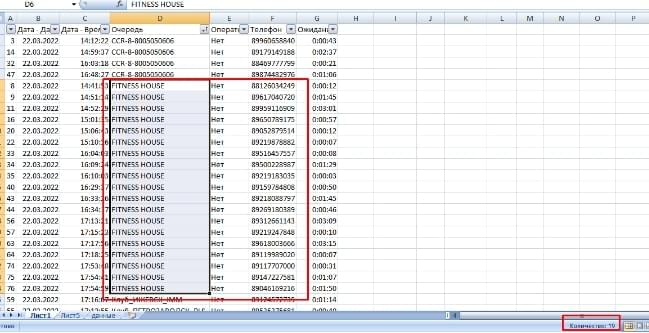
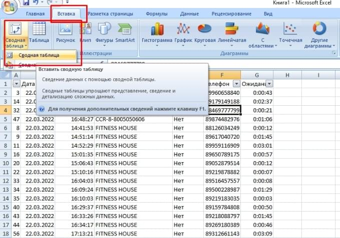
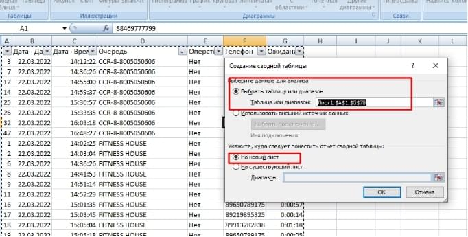
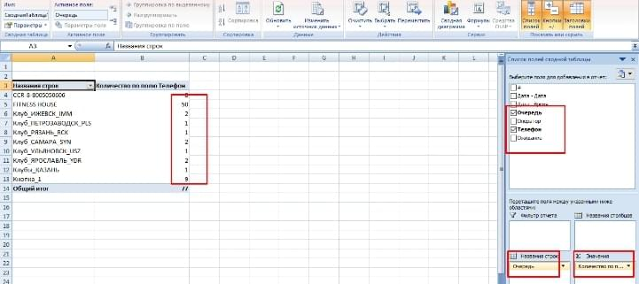
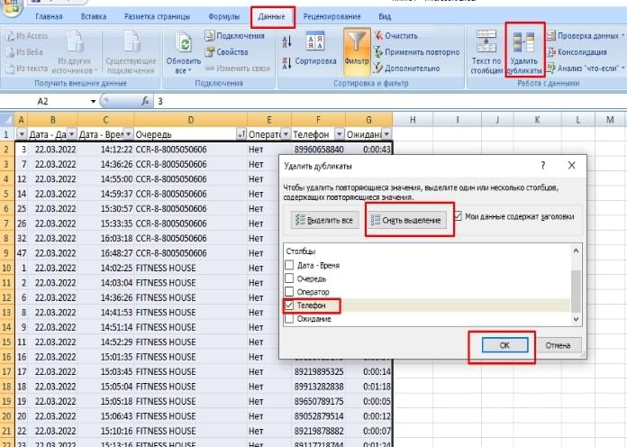
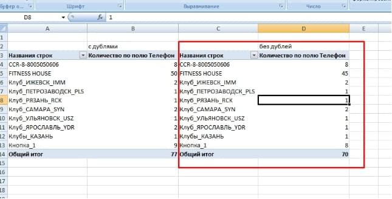
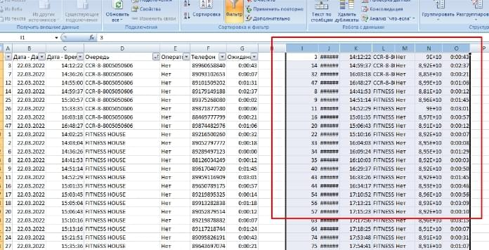
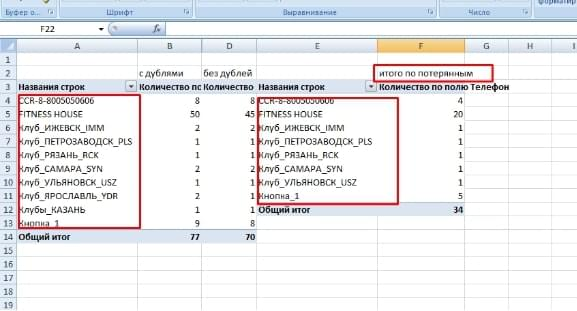

- Можно просто выделять и записывать на листочек или на новый лист в файле.
- Можно сделать сводную таблицу для этой таблице и excel сам посчитает значения.
Создание сводной таблицы.
В таблице нужно встать на любую ячейку с данными и перейти на вкладку «вставка» и нажать на «сводная таблица».
На новом листе переместить из списка полей поле «очередь» в блок название строк, «телефон» - в значение с параметром количество.
На листе с таблицей потерянных встаем на ячейку в колонке «телефон», далее переходим на вкладку «данные» и нажимаем на «удалить дубликаты». Появится окно «удалить дубликаты». Нужно снять выделение со всех столбцов и выделить только столбец «телефон» и нажать «ок».
Далее нужно подсчитать количество телефонов по каждой очереди (два варианта - см. пункт 1) - это нужно будет для отчета.
Пример по второму варианту (сводная таблица). Можно скрыть колонку «C» для удобства.
Открываем таблицу принятых. Копируем таблицу потерянных без дублей (без заголовков - только данные) на лист с принятыми в конец пропуская пустую строку между таблицами.
Удаляем дубликаты по колонке телефон (см. пункт 2).
Копируем что осталось после удаления (снизу до разделителя - пустая строка) и вставляем на лист потерянных рядом с таблицей.
Далее нам нужно вырезать данные из таблице слева - можно выделить первую строку без заголовков, а затем нажать на клавиатуре ctrl + shift + стрелка вниз, а затем ctrl+X и вставить под таблицу справа пропустив пустую строку ctrl + V. Потом это все переместить влево под заголовки.
Удалить дубли - по полю телефон.
Нужно еще по этой таблице посчитать телефоны по конкретным линиям(очередям)
Пример по сводным таблицам
Смотрим очереди, если нет каких-то (например выше - Казань) - значит в отчете будет 0.
По этим данным делаем все тоже самое + еще пропущенные сравниваем с потерянными для удаления дубликатов.
{kind=link}
{kind=link}
{kind=link}
{kind=link}
{kind=link}
{kind=link}
{kind=link}
{kind=link}
{kind=link}